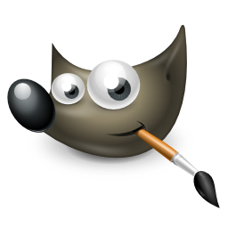
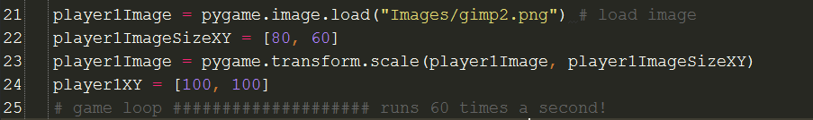
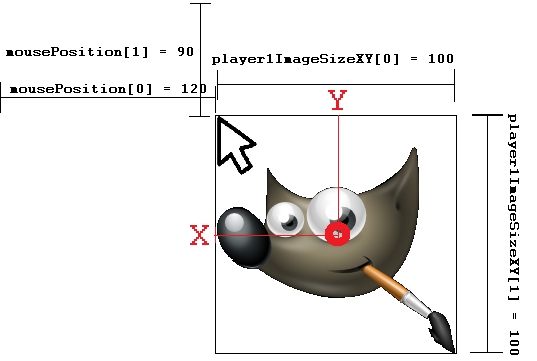

Pygame
Images
Download It
- Start by picking up a fresh copy of the pyGame template file to use in this lesson, and save it in the directory you've been using for this topic:
- Right click and save as - for a fresh template
- Create a folder called Images in your pygame folder.
- Right click on the image below and save it in your new Images folder

Learn It
- Basic shapes is a good starting point, but images are much more fun.
- Using images as sprites is very simple in pyGame.
Try It
- The process for using an image in pyGame is as follows:
Load the image into memory
Create a variable to hold the sprite's X and Y position on the screen
BEGIN GAME LOOP
Set new X and Y coordinates for the image
Display the image on the screen
- The graphic(s) we wish to load only need to be loaded into the computer's memory once.
- If we loaded the file from the computer's hard drive 60 times a second, we would get very poor game performance.
- The process of painting the screen with our loaded image(s) is called bit blitting, or just 'blit' for short.
- Start by adding this code just under line 16.
- NOTE: you can make line numbers appear next to your code by right-clicking the tall, thin grey empty area that sits just to the left of your code in pyCharm, then clicking 'Show line numbers':
player1Image = pygame.image.load("gimp2.png") player1XY = [100, 100]
- Then add these lines under
line 27to display (blit) the image on the screen: - NOTE: Make sure these lines are indented, otherwise they won't work.
screen.fill(black) player1 = screen.blit(player1Image, player1XY) - We now have a static image. To make it a little more interactive, let's make the sprite follow the mouse. We’ve done this before but we are going to improve our method.
- Add these two line underneath the
screen.fill(black)command on line 28 (don't forget to indent!):
mousePosition = pygame.mouse.get_pos() player1XY = mousePosition[0], mousePosition[1]
- What do you think this is doing?
- Your code will now look something like this:

Try It
- Our app is coming along, but we've a few improvements that are needed to make this better.
- The mouse cursor isn't centred on the image,
- The mouse cursor is visible, which looks unsightly,
- The image is a little large.
- Let's deal with the re-sizing of the image first. We can handle this at the top of our program, before we start our game loop. Our method will be:
Store the size we want for the image in a variable Use pygame.image.transform to resize the image.
- Add these lines of code to the top of your program, under
player1XY = [100, 100]over at line 18 (these lines don't need to be indented):
player1ImageSizeXY = [80, 60] player1Image = pygame.transform.scale(player1Image, player1ImageSizeXY)
- The code will read something like this:

- As we know the size of the image, we can use this to correct the mouse point position from our bug list. Consider the image below, which shows the current situation in our PyGame window, but with some dimensions drawn over the top of logo and the mouse pointer:

- The image is currently being drawn on the screen starting at (120, 90) which is where the mouse pointer is. This is the top-left corner of the image.
- To get the image to centre up, we need to tell PyGame to draw the image a bit further to the left, and a bit further up. How much, though?
- The width of our image (in pixels) is always stored in the variable called
player1ImageSizeXY[]. When we want the X position, we use=player1ImageSizeXY[0]and when we want the Y position, we useplayer1ImageSizeXY[1]. - Just thinking about the X position first, we need to draw the image at where the mouse currently is (on the X axis; 120 pixels across in this example), then…
- Half the width of the image over to the left (50 pixels in this case).
- The same idea applies to the Y axis.
- Our formula is:
new X Position = Mouse X position - (width of the image / 2) new Y Position = Mouse Y position - (height of the image / 2)
- So in the example from the image, it'd be:
new X Position = Mouse X position - (width of the image / 2) new X Position = 120 - (100 / 2) = 120-50 = 70 new Y Position = Mouse Y position - (height of the image / 2) new Y Position = 90 - (100 / 2) = 90 - 50 = 40
- To deal with this for any mouse position, we'll need this algorithm, which uses the variables available in our program:
newXPosition = mousePosition[0] - (player1ImageSizeXY[0] / 2) newYPosition = mousePosition[1] - (player1ImageSizeXY[1] / 2) player1XY = newXPosition, newYPosition DRAW PLAYER1 AT LOCATION player1XY
- Around line 32 in your program, you'll have a line of code saying:
player1XY = mousePosition[0], mousePosition[1]
- Remove this line, and replace it with our improved version:
newXPosition = mousePosition[0] - (player1ImageSizeXY[0] / 2) newYPosition = mousePosition[1] - (player1ImageSizeXY[1] / 2) player1XY = newXPosition, newYPosition
- Run your code, and test that the image is now centred on the mouse pointer.
- If you're unsure of any of the steps above, a video tutorial running through this lesson can be seen below.
Badge It
- Silver: Add comments to your code, describing how using image size is useful in correcting the mouse pointer position.
- Gold: Replace the image below as your sprite, remembering that it has a different aspect ratio, so you'll need to adjust the size of the image to ensure it doesn't look squashed. Explain in a text file why is it better to store the image X and Y size in variables.

- Platinum: Use gimp2 to cut out an image from either of the sprite sheets below and add an alpha layer. Use this as your player image instead.


- A video tutorial on using alpha in Gimp can be found below.